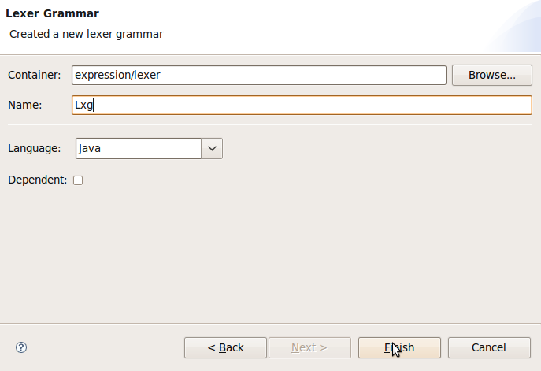
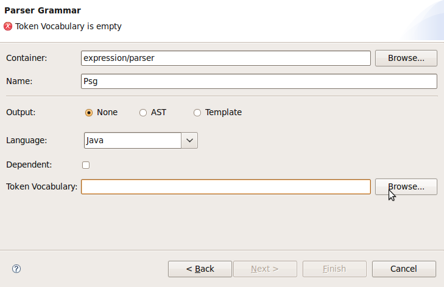
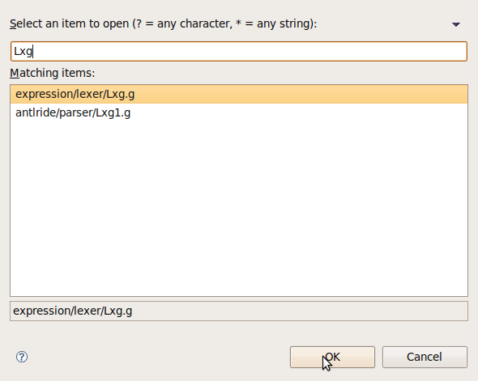
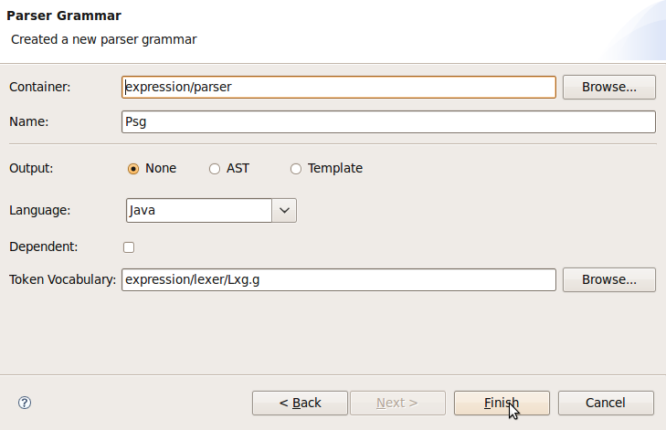

Working with lexer and parser grammars
Select your project and create a folder, for example: "lexer"
Select the menu item File>New>ANTLR
IDE>Lexer Grammar to open the Lexer
Grammar dialog wizard.
In the Container field make sure of select the
"lexer" folder
In the Name field type Lxg. Click finish

Select your project and create a folder, for example: "parser"
Select the menu item File>New>ANTLR
IDE>Parser Grammar to open the Parser
Grammar dialog wizard.
In the Container field make sure of select the
"parser" folder
In the Name field type Psg

Select the Token Vocab button and search for the "Lxg" grammar. Click Ok

Click finish
